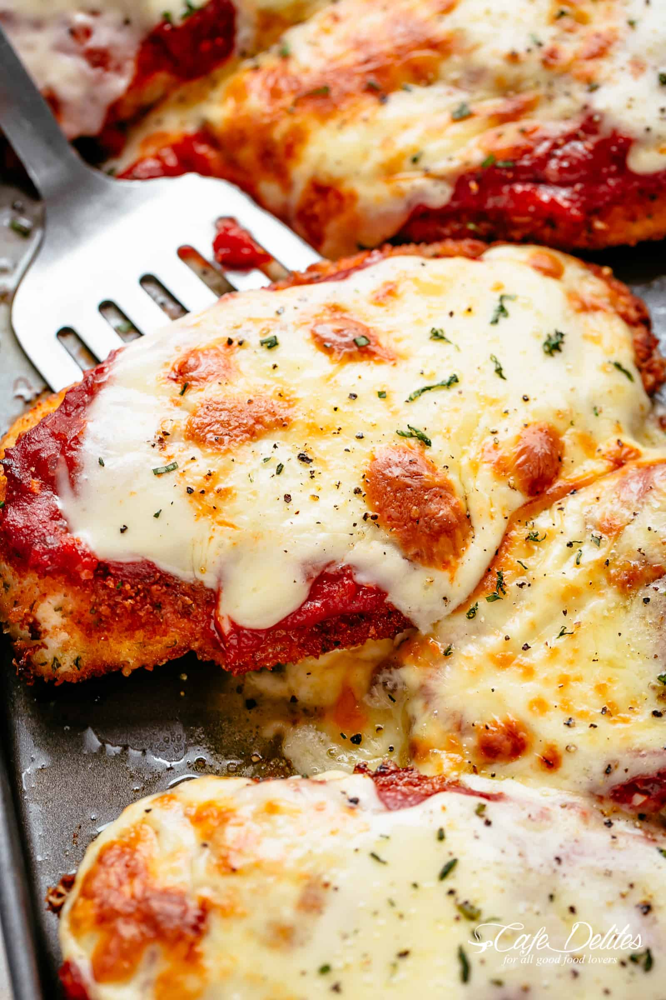
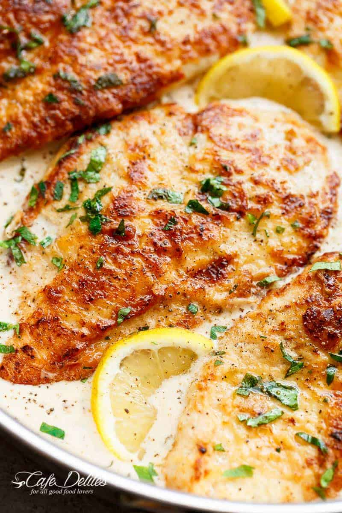
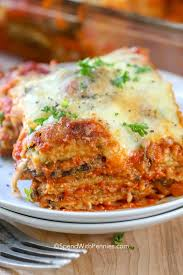
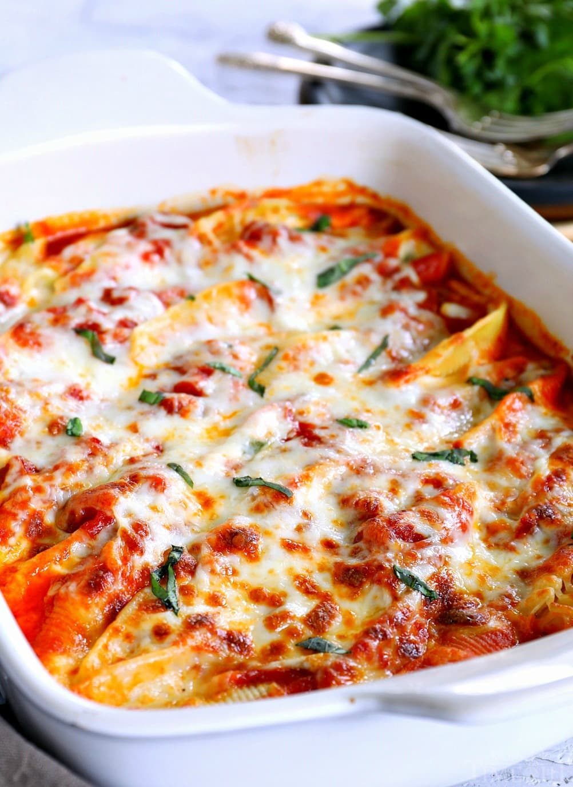
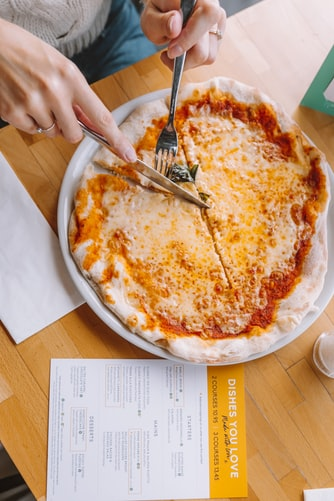
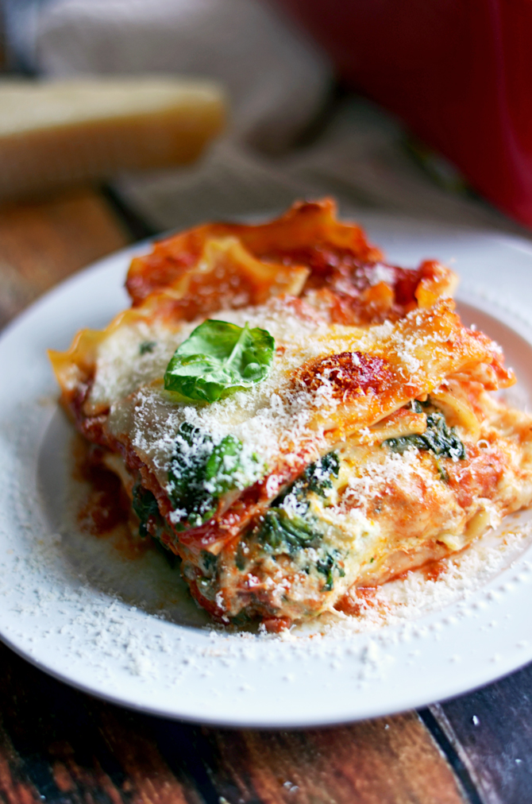
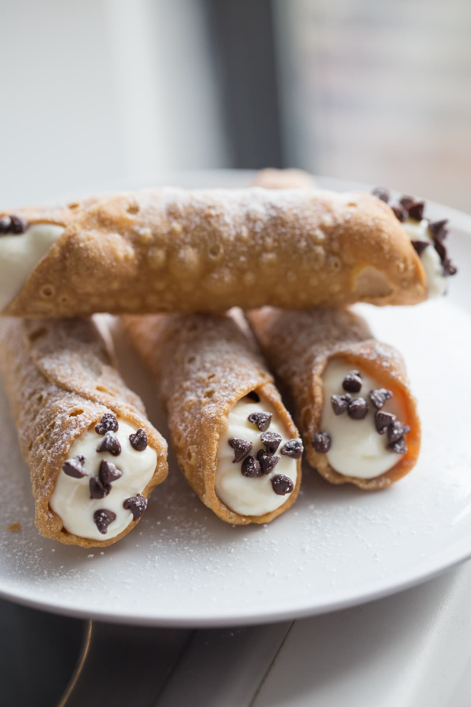
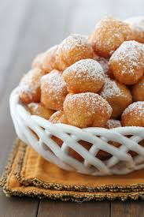
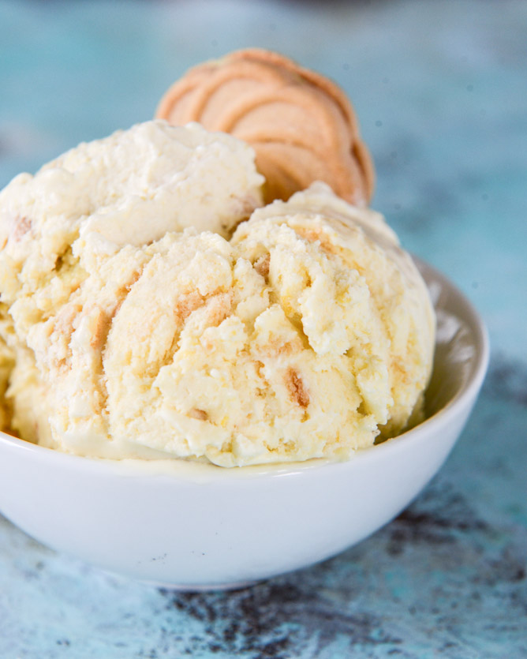
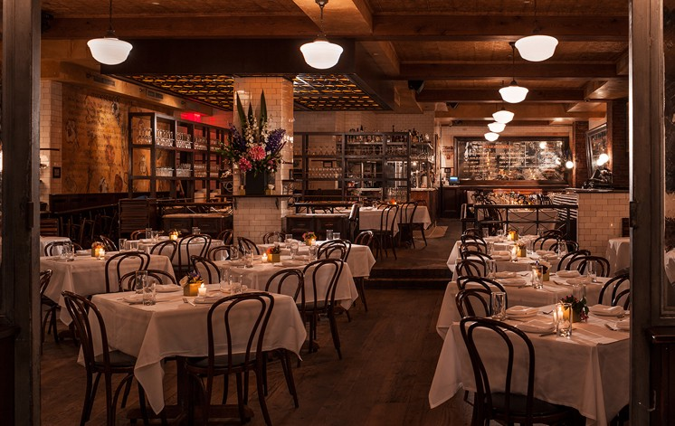

Menu
- Chicken Parmigiana 
- Two lightly fried parmesan-breaded chicken breasts are smothered with Olive Garden's homemade marinara sauce and melted Italian cheeses. We serve our Chicken Parmigiana with a side of spaghetti for dinner.
($15.95) - Baked Ziti
- Baked ziti is a popular casserole made with ziti pasta and a Neapolitan-style tomato-based sauce characteristic of Italian-American cuisine.
($12.95) - Chicken Francese 
- Chicken Francese is an Italian-American dish of flour-dredged, egg-dipped, sautéed chicken cutlets with a lemon-butter.
($12.50) - Eggplant Parmiginan 
- A classic Italian baked Eggplant Parmesan casserole with breaded eggplant slices layered with Mozzarella, Parmesan, basil, and tomato sauce.
($15.95) - Stuffed Shells 
- Jumbo pasta shells stuffed with ricotta and baked with tomato sauce and mozzarella.
($12.50) - Cheese Pizza Pie 
- 8 Pieces wheat-based dough topped with tomato sause and cheese.
($10.00) - Pepperoni Cheese Pizza Pie
- 8 Pieces wheat-based dough topped with tomato sause, cheese and pepperoni.
($10.00) - Four Cheese Lasagna 
- Classic lasagna noodles stuffed with creamy cottage cheese, ground beef, and tomatoes.
($12.00) - Meat Lasagna
- Stacked layers of pasta alternated with sauces, meats, vegetables and cheese, and sometimes topped with melted grated cheese.
($12.00) - Cannoli 
- Tube-shaped Italian pastry filled with sweet cream and ricotta cheese, with candied fruit or chocolate sprinkles.
($10.50) - Zeppoles 
- An Italian pastry consisting of a deep-fried dough ball about 4 inches (10 cm) in diameter.
($10.50) - Tiramisu
- A coffee-flavoured Italian dessert. It is made of ladyfingers (savoiardi) dipped in coffee, layered with a whipped mixture of eggs, sugar, and mascarpone cheese, flavoured with cocoa.
($10.50) - Gelato 
- Gelato is the Italian word for ice cream. It starts out with a similar custard base as ice cream, but has a higher proportion of milk and a lower proportion of cream and eggs (or no eggs at all). It is churned at a much slower rate, incorporating less air and leaving the gelato denser than ice cream.
($10.50)


10% off Bill on your first visit when you mention website.
